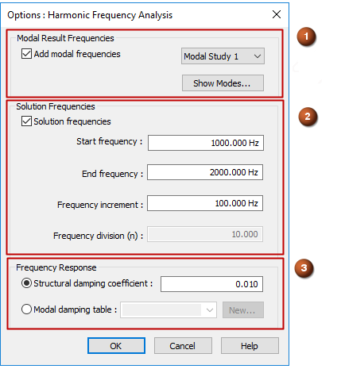
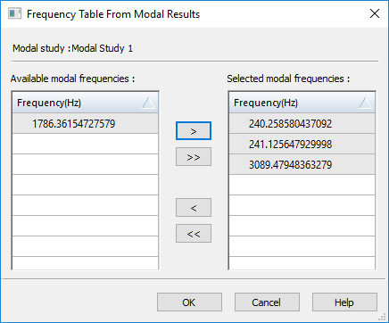
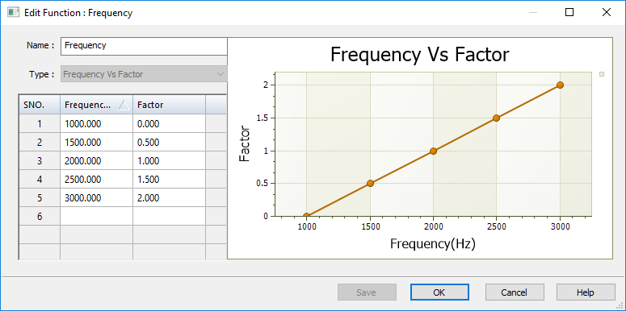

Harmonic response studies
In Solid Edge Simulation, the Harmonic Response study type provides a method of dynamic analysis—harmonic frequency response—which simulates the behavior of an object that undergoes loading that occurs over a specific frequency range.
You can use a Harmonic Response study to evaluate the vibration characteristics of designed products and structures as external energy is introduced to a system that was at equilibrium. By looking at the dynamic response level at each frequency, such as vibration displacement and chatter, you can identify important frequency ranges that need to be mediated to prevent structural or mechanical failure.
A Harmonic Response study accounts for loads, damping, and stiffness. You also can use functions to specify loading conditions that vary with frequency, and structural damping that varies with frequency.
Harmonic frequency response analysis is an extension of modal frequency analysis, in that you can use the results of a Normal Modes study as input to a Harmonic Response study. For more information, see Define a harmonic frequency response study.
Selecting frequencies from a modal analysis
A normal modes analysis and a harmonic frequency response analysis provide complementary sets of information.
Whereas a Normal Modes study finds the frequencies at which the model resonates naturally, before external forces are applied, you can use the Harmonic Response study to find out how much displacement occurs when a load is applied that will cause the model to vibrate within one of the modal frequency ranges.
If the frequency results from a prior Normal Modes study are available in the study document, then you can select the frequencies automatically when you define the study options in the dialog box Options: Harmonic Frequency Analysis. Using the known results of the Normal Modes study creates a more accurate frequency table for the Harmonic Response study. To access these results, use the options in the Modal Result Frequencies section (1) of the dialog box. You can choose a subset of the normal modes using the Show Modes button to open the Frequency Table from Modal Results dialog box.

In the Frequency Table from Modal Results dialog box, select the appropriate frequency range from the modal study that you want to investigate, or select a low-to-high range.
Note that when you run a Normal Modes study, unless you change the Number of modes setting in the Create Study dialog box, by default the study solves for four frequency modes in the study geometry. When you open the Frequency Table from Modal Results, all four modes are listed and selected. If you choose three of the modes from the table as the basis for the harmonic response study, then three normal modes will be created within the harmonic frequency response analysis results set.

Selecting a user-defined set of frequencies
Use the Solution Frequencies section (2) of the Options: Harmonic Frequency Analysis dialog box to specify a range of solution frequencies of interest based on your design. You can use these options with or without the frequencies from a normal modes study.
When modal frequency results do not exist, you can specify the Start frequency and End frequency to include in the study, and the Frequency increments at which you want results to be calculated.
However, if you are using a Normal Modes study as the source for selecting frequencies for the Harmonic Response study, then you can also use the options in this section to either limit the results to a subset of the natural frequencies, or to add more frequencies to the solution. The objective of a harmonic response analysis is to find how much displacement and rotation occurs within the resonant frequency range when a load of sufficient magnitude is applied to cause the model to vibrate at those frequencies.
The results of a normal modes study identified the natural frequencies of 120.56 Hz and 467.22 Hz. To check the displacement on these frequencies under loading, you can include those modal result frequencies in your harmonic response study. Based on your knowledge of the design, you may want to check displacement at 0, 500, 1000, and 1500 Hz. To do this, you can add those solution frequencies in the Solution Frequencies section:
-
Start frequency=0 Hz
-
End frequency=1500 Hz.
-
Frequency increment=500 Hz
Applying structural damping
When you create a harmonic frequency response study, you also need to account for structural damping. Structural damping is primarily friction caused by movement, which in turn dissipates energy. In a dynamic analysis, you can apply structural damping at known critical vibration frequencies, to verify that resonance-caused displacement at these frequencies does not cause your design to break.
You define structural damping in the Frequency Response section (3) of the Options: Harmonic Frequency Analysis dialog box. The default is to use the Structural damping coefficient option, which applies a constant ratio across every frequency, or you can define and apply damping that varies with frequency by defining a Frequency vs. Structural Damping function, as described below.
-
In the Options: Harmonic Frequency Analysis dialog box, in the Frequency Response section, select the Modal damping table option and click New.
-
In the New Function dialog box, enter the X-axis Frequency(Hz) values, and the Y-axis Structural Damping values. These are based on known values in your design.
-
The values you enter in the Frequency(Hz) column should be based on the frequencies of interest.
-
The values you enter in the Structural Damping column should be based on the varying amount of friction you expect to apply at each frequency, with higher damping values at critical frequencies.

-
-
Save and close the New Function dialog box.
-
In the Options: Harmonic Frequency Analysis dialog box, apply the function to the study. Select the newly created Function 1 from the Modal damping table list.
Defining frequency-dependent loads
Oscillatory loading is sinusoidal in nature. In its simplest case, this loading is defined as having amplitude at a specific frequency. The steady-state oscillatory response occurs at the same frequency as the loading. However, a dynamic load frequency that coincides with one of the natural frequencies can cause large displacements and stresses.
To simulate a dynamic, frequency-varying load in a harmonic response study, use the Function command to define a Frequency vs. Factor loading function, and then reference it in the study using the Force load command or the Displacement load command.
The following function gradually raises the frequency in defined increments in a given frequency range. If you have not extracted the normal modes in a previous analysis, this is a way to create a frequency table to excite the structure. The disadvantage of this method is that it may give you a large number of data points to review in general and not concentrate the results around the natural modes, where the response should be the highest.

Reviewing the results of a harmonic response study
The results of harmonic frequency response analysis are reported in the acceleration component plots, displacement component plots, constraint force plots, and strain component plots that are produced. You also can Graph nodal analysis results.
How do I
Verify simulation material propertiesCreate a study
Create a study using a simplified model
Define a coupled study for thermal stress analysis
Assign units in studies
Define and review a transient heat study
Define a harmonic frequency response study
Learn more
Creating and using studiesUsing materials in studies
Modifying studies
Structural studies
Thermal studies
Using steady state heat transfer studies
Coupled studies
Create and solve a study using GD optimized model
Create and solve a study using an STL model
Defining thermal studies
Look up more details
Create Study (or Modify Study) dialog boxTransient Heat Options dialog box
Options: Harmonic Frequency Analysis dialog box